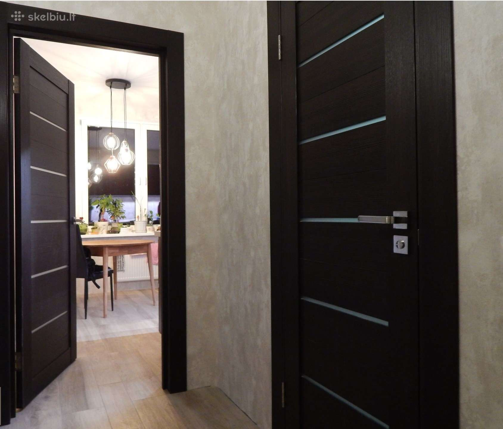
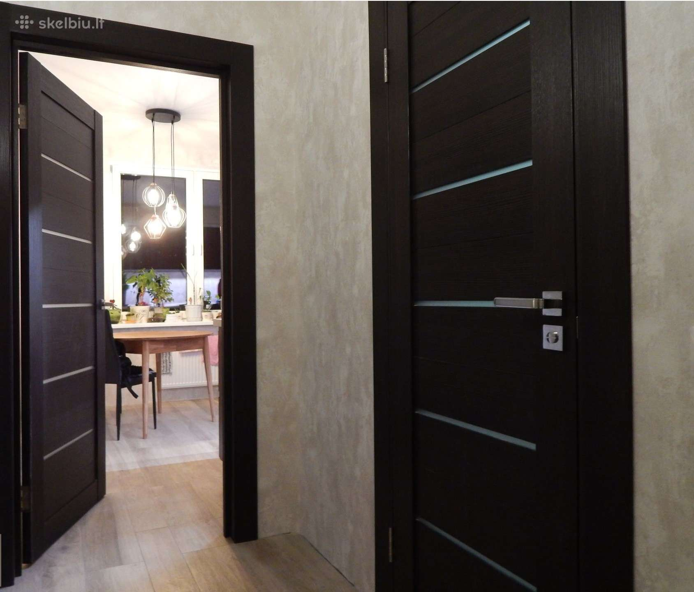

Durys | Hörmann durų programa stabilioms statyboms
2020.10.27 06:37

Įmonė Dilerių forumas Medijos centras 8-800-00017 Paieška Lietuva Toggle navigation Privati statyba ir renovacija Architektai Pramonė, prekyba ir viešasis sektorius Garažo vartai Durys Pavaros Kur galite įsigyti? Atstovybės kontaktai Durys Garažo vartai Pramoniniai vartai ir logistika Transporto priemonių judėjimo kontrolės sistemos Pavaros Informacija architektams Pramoniniai vartai ir logistika Durys Garažo vartai Pavaros Transporto priemonių judėjimo kontrolės sistemos Serviso tarnyba Segmentiniai garažo vartai Šoninės garažo durys Garažo vartai RollMatic Aliumininio rėmo vartai Plokštuminiai atverčiamieji vartai Berry Aliumininės namo durys Plieninės įėjimo durys Kambario durys Funkcinės durys jūsų namams Šoninės garažo durys Garažo vartų pavaros Įvažiavimo vartų pavaros Vidinių durų pavara Karštoji linija Medijos centras Gauti pasiūlymą Durys ir staktos objekto statybai Daugiafunkcinės durys Plieninės ir nerūdijančiojo plieno durys STS / STU Funkcinės durys objekto statybai Staktos Durys gyvenamosioms patalpoms Namo durys Kambario Durys Funkcinės durys gyvenamosioms patalpoms Šoninės garažo durys Segmentiniai garažo vartai Plokštuminiai atverčiamieji vartai Berry Garažo vartai RollMatic Šoninės garažo durys Pramoniniai segmentiniai vartai Greitaeigiai vartai Susukami vartai ir susukamos grotos Krovimo technika Bendrųjų garažų vartai Priešgaisriniai stumdomieji vartai Stumdomieji kiemo vartai Eismą ribojantis stulpelis Stumdomieji kiemo vartai Garažo vartų pavaros Įvažiavimo vartų pavaros Vidinių durų pavara CAD/BIM Medijos centras Pramoniniai segmentiniai vartai Greitaeigiai vartai Susukami vartai ir susukamos grotos Krovimo technika Privažiavimo kontrolės sistemos Bendrųjų garažų vartai Priešgaisriniai stumdomieji vartai Stumdomieji kiemo vartai Daugiafunkcinės durys Plieninės ir nerūdijančiojo plieno durys STS / STU Funkcinės durys objekto statybai Staktos Namo durys Kambario Durys Funkcinės durys gyvenamosioms patalpoms Šoninės garažo durys Segmentiniai garažo vartai Plokštuminiai atverčiamieji vartai Berry Garažo vartai RollMatic Šoninės garažo durys Garažo vartų pavaros Įvažiavimo vartų pavaros Vidinių durų pavara Eismą ribojantis stulpelis Stumdomieji kiemo vartai Lietuva Toggle navigation Privati statyba ir renovacija Garažo vartai Segmentiniai garažo vartai Šoninės garažo durys Garažo vartai RollMatic Aliumininio rėmo vartai Plokštuminiai atverčiamieji vartai Berry Durys Aliumininės namo durys Plieninės įėjimo durys Kambario durys Funkcinės durys jūsų namams Šoninės garažo durys Pavaros Garažo vartų pavaros Įvažiavimo vartų pavaros Vidinių durų pavara Kur galite įsigyti? Atstovybės kontaktai Karštoji linija Medijos centras Gauti pasiūlymą Architektai Durys Durys ir staktos objekto statybai Daugiafunkcinės durys Plieninės ir nerūdijančiojo plieno durys STS / STU Funkcinės durys objekto statybai Staktos Durys gyvenamosioms patalpoms Namo durys Kambario Durys Funkcinės durys gyvenamosioms patalpoms Šoninės garažo durys Garažo vartai Segmentiniai garažo vartai Plokštuminiai atverčiamieji vartai Berry Garažo vartai RollMatic Šoninės garažo durys Pramoniniai vartai ir logistika Pramoniniai segmentiniai vartai Greitaeigiai vartai Susukami vartai ir susukamos grotos Krovimo technika Bendrųjų garažų vartai Priešgaisriniai stumdomieji vartai Stumdomieji kiemo vartai Transporto priemonių judėjimo kontrolės sistemos Eismą ribojantis stulpelis Stumdomieji kiemo vartai Pavaros Garažo vartų pavaros Įvažiavimo vartų pavaros Vidinių durų pavara Informacija architektams CAD/BIM Medijos centras Pramonė, prekyba ir viešasis sektorius Pramoniniai vartai ir logistika Pramoniniai segmentiniai vartai Greitaeigiai vartai Susukami vartai ir susukamos grotos Krovimo technika Privažiavimo kontrolės sistemos Bendrųjų garažų vartai Priešgaisriniai stumdomieji vartai Stumdomieji kiemo vartai Durys Daugiafunkcinės durys Plieninės ir nerūdijančiojo plieno durys STS / STU Funkcinės durys objekto statybai Staktos Namo durys Kambario Durys Funkcinės durys gyvenamosioms patalpoms Šoninės garažo durys Garažo vartai Segmentiniai garažo vartai Plokštuminiai atverčiamieji vartai Berry Garažo vartai RollMatic Šoninės garažo durys Pavaros Garažo vartų pavaros Įvažiavimo vartų pavaros Vidinių durų pavara Transporto priemonių judėjimo kontrolės sistemos Eismą ribojantis stulpelis Stumdomieji kiemo vartai Serviso tarnyba Įmonė Įmonė Aplinka Dilerių forumas Medijos centras 8-800-00017
Kiekvieno namo kambariui
tinkamos durys
Durys
Privati statyba ir renovacija Durys ×Klaida
Pasirinkite visas tris kategorijas.Namo durys
Jūsų naujos namo durys turi būti ypatingos. Jos turi būti priderintos prie namo stiliaus, būti išvaizdžios ir rodyti Jūsų gerą skonį. Be to, Jūsų namo durys turi atitikti aukščiausius saugos standartus ir taupyti energiją pasižymėdamos aukšta šiluminės izoliacijos verte.
apie namo duris
Įėjimo durys
Šios aukštos kokybės įėjimo durys pasižymi puikiomis šiluminės izoliacijos vertėmis, patikima saugos įranga, plačiu motyvų pasirinkimu bei patraukliu kainos ir kokybės santykiu.
apie įėjimo duris
Kambario durys
Iš naujo atraskite jaukumą: su kokybiškomis kambario durimis. Namai yra mūsų gyvenimo, poilsio ir gerovės šerdis. Tą suteikia mūsų siūlomos kambario durys, kurios taip pat užtikrina papildomą namų komfortą.
su kambario durimis
Funkcinės durys jūsų namams
Nesvarbu, ar tai nauja statyba, ar modernizavimas, Hörmann pasiūlys tinkamas duris kiekvienai namo erdvei. Apsauginės durys rūsiui arba įėjimui į garažą, ugnį sulaikančios durys katilinėms arba daugiafunkcinės durys dirbtuvėms – mūsų aukštos kokybės plieno durys pasirūpins, kad tarp savo namų sienų jaustumėtes patogiai ir saugiai.
apie funkcines duris jūsų namams
Šoninės garažo durys
Šoninės durys yra labai praktiškos. Iš Hörmann įsigysite prie bet kurių „Berry“ atverčiamų vartų, segmentinių vartų ar susukamų garažo vartų RollMatic derančias garažo šonines duris.
apie garažo šonines duris
- Modernios durys - Stepmaster
- Vidaus Durys - Vilniuje, Kaune, Klaipėdoje | Kambariodurys.lt
- Durys > Plastikinės durys | Vokiška Kokybė | KOMMERLING, KBE
- Pigios vidaus durys Vilniuje
- Pagrindinis - Faneruotos vidaus durys kaune - Pigios geros ...
- Durys | Hörmann durų programa stabilioms statyboms
- Reisvita - Durys namui
- Aukščiausios kokybės Medinės durys, Ąžuolinės durys ...
- Laminuotos durys - Katalogas - DurysDurytes
- VIDAUS durys | DURŲ PASAULIS
- Modernios durys - Stepmaster
Aukščiausios kokybės Medinės durys, Ąžuolinės durys, Pušinės durys, Laminuotos durys, Faneruotos durys, Lauko durys Pagamintos Lietuvoje Už patrauklią kainą
- Vidaus Durys - Vilniuje, Kaune, Klaipėdoje | Kambariodurys.lt
E-durys – tai elektroninė durų parduotuvė, prekiaujanti vidaus, lauko, specializuotos paskirties durimis bei durų priedais. Čia rasite duris pasižyminčias ne tik savitu stiliumi ar unikaliu dizainu, bet ir išskirtiniu funkcionalumu: nematomas vidaus duris, stumdomas duris, abipuses varstomas duris, priešgaisrines ar garsą ...
- Durys > Plastikinės durys | Vokiška Kokybė | KOMMERLING, KBE
Ilgaamžiškumas Durys gaminamos tik iš aukščiausios kokybės brandaus ąžuolo medienos, yra ilgaamžės, tvirtos, puikiai izoliuoja garsą. Aukščiausia kokybė Kontroliuojame ir esame atsakingi už visą tiekimo grandinę: nuo medienos atrankos, pristatymo į gamyklą, tikslaus technologinio medžio paruošimo ciklo, produkto gamybos iki ...
- Pigios vidaus durys Vilniuje
Kambario durys turi būti ne tik tvirtos, bet ir gražios, puošnios. Tam jos yra dengiamos ekofaneruote. Toks durų padengimo būdas yra pakankamai stiprus ir tampa itin tikroviška medžio imitacija.
- Pagrindinis - Faneruotos vidaus durys kaune - Pigios geros ...
Medinės durys pardavinėjamos tiek natūralios, tiek jau dažytos (beicuotos) įvairiomis spalvomis. Faneruotos durys – karkasas gaminamas iš klijuotos medienos, abi pusės dengiamos medžio drožlių plokščių sluoksniais, o paviršius padengtas natūralia ar „fine line“ faneruote. Laminuotos durys puikiai dera prie šiuolaikinio ...
- Durys | Hörmann durų programa stabilioms statyboms
Apsauginės durys rūsiui arba įėjimui į garažą, ugnį sulaikančios durys katilinėms arba daugiafunkcinės durys dirbtuvėms – mūsų aukštos kokybės plieno durys pasirūpins, kad tarp savo namų sienų jaustumėtes patogiai ir saugiai. apie funkcines duris jūsų namams.
- Reisvita - Durys namui
Šarvuotos durys, vidaus durys, lauko durys, metalinės laiptinių durys, plastikinės lauko durys. Gamyba ir prekyba. Šiauliai
- Aukščiausios kokybės Medinės durys, Ąžuolinės durys ...
Šiltos ir puošnios lauko durys Jūsų namams. Kokybiškos vidaus durys. Kambario durys puikiai tiks Jūsų interjerui.
- Laminuotos durys - Katalogas - DurysDurytes
Kokybiškos ir pigios vidaus durys Vilniuje. Didelis vidaus ir lauko durų pasirinkimas. Pas mus rasite itin platų vidaus medžio masyvo durų, faneruotų durų, laminuotų durų ir lauko medžio masyvo durų, šarvuotų durų asortimentą.
- VIDAUS durys | DURŲ PASAULIS
Medinės lauko durys - specialiai apšiltintos ir impregnuotos, Lietuviškai žiemai ir vasarai pritaikytos medienos masyvo durys. Apsauga. Labai svarbu, kad projektuojant namą medinės lauko durys būtų apsaugomos nuo tiesioginių saulės spindulių ir nuo tiesioginio lietaus.
Aukščiausios kokybės Medinės durys, Ąžuolinės durys, Pušinės durys, Laminuotos durys, Faneruotos durys, Lauko durys Pagamintos Lietuvoje Už patrauklią kainą
E-durys – tai elektroninė durų parduotuvė, prekiaujanti vidaus, lauko, specializuotos paskirties durimis bei durų priedais. Čia rasite duris pasižyminčias ne tik savitu stiliumi ar unikaliu dizainu, bet ir išskirtiniu funkcionalumu: nematomas vidaus duris, stumdomas duris, abipuses varstomas duris, priešgaisrines ar garsą ...
Ilgaamžiškumas Durys gaminamos tik iš aukščiausios kokybės brandaus ąžuolo medienos, yra ilgaamžės, tvirtos, puikiai izoliuoja garsą. Aukščiausia kokybė Kontroliuojame ir esame atsakingi už visą tiekimo grandinę: nuo medienos atrankos, pristatymo į gamyklą, tikslaus technologinio medžio paruošimo ciklo, produkto gamybos iki ...
Kambario durys turi būti ne tik tvirtos, bet ir gražios, puošnios. Tam jos yra dengiamos ekofaneruote. Toks durų padengimo būdas yra pakankamai stiprus ir tampa itin tikroviška medžio imitacija.
Medinės durys pardavinėjamos tiek natūralios, tiek jau dažytos (beicuotos) įvairiomis spalvomis. Faneruotos durys – karkasas gaminamas iš klijuotos medienos, abi pusės dengiamos medžio drožlių plokščių sluoksniais, o paviršius padengtas natūralia ar „fine line“ faneruote. Laminuotos durys puikiai dera prie šiuolaikinio ...
Apsauginės durys rūsiui arba įėjimui į garažą, ugnį sulaikančios durys katilinėms arba daugiafunkcinės durys dirbtuvėms – mūsų aukštos kokybės plieno durys pasirūpins, kad tarp savo namų sienų jaustumėtes patogiai ir saugiai. apie funkcines duris jūsų namams.
Šarvuotos durys, vidaus durys, lauko durys, metalinės laiptinių durys, plastikinės lauko durys. Gamyba ir prekyba. Šiauliai
Šiltos ir puošnios lauko durys Jūsų namams. Kokybiškos vidaus durys. Kambario durys puikiai tiks Jūsų interjerui.
Kokybiškos ir pigios vidaus durys Vilniuje. Didelis vidaus ir lauko durų pasirinkimas. Pas mus rasite itin platų vidaus medžio masyvo durų, faneruotų durų, laminuotų durų ir lauko medžio masyvo durų, šarvuotų durų asortimentą.
Medinės lauko durys - specialiai apšiltintos ir impregnuotos, Lietuviškai žiemai ir vasarai pritaikytos medienos masyvo durys. Apsauga. Labai svarbu, kad projektuojant namą medinės lauko durys būtų apsaugomos nuo tiesioginių saulės spindulių ir nuo tiesioginio lietaus.

 
